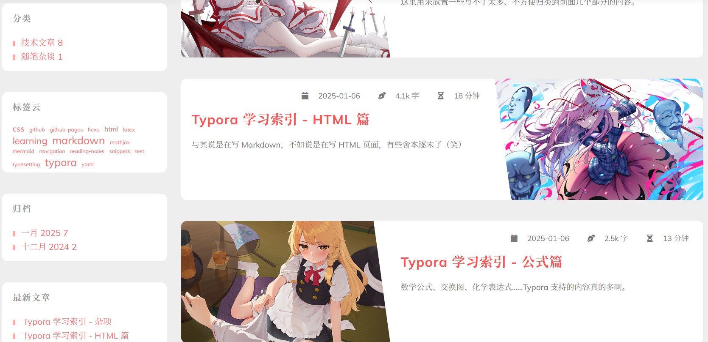

有句话是这么说的：搭建完博客的第一篇文章就是讲如何搭建博客。万幸这并非我博客中的唯一一篇文章。万一我哪天又得重新配一遍博客，那就得看这篇文章了。
本博客使用 Hexo + GitHub Pages + hexo-theme-reimu 实现，工作流使用 VS Code + Typora。
下载模板、安装依赖
从 reimu-template 下载本模板，或使用 git clone 命令：
1 | git clone https://github.com/D-Sketon/reimu-template |
请注意不要安装 hexo-renderer-marked 插件，这个插件会导致数学公式和 emoji 无法正常显示。
修改 _config.yml 配置
注意，本文只放上所有我修改过的配置，其余按默认配置来。
参考 Hexo 官方文档。
网站信息
1 | # Site |
效果如下：
文件结构调整
1 | post_asset_folder: true |
这一部分主要是为了调整文件结构，使得文章的图片可以放在与文章同名的文件夹中，而不是统一放在 source/images 文件夹中。当然对我而言这种结构还是不太爽。
部署
1 | deploy: |
部署方法在这里就可以说清楚了：
- 先创建一个名为
<username.lowercase>.github.io的仓库，
其中<username.lowercase>表示你的 GitHub 用户名（而非"Name"）的小写形式。 - 然后在 Hexo 的配置文件中进行如上配置，
repo字段填写你的仓库地址加上.git后缀。 - 最后运行
hexo deploy即可。
添加搜索功能
1 | search: |
这里的搜索功能是基于 hexo-generator-search 插件实现的：
1 | npm install hexo-generator-search --save |
修改 _config.reimu.yml 配置
这个配置文件是主题 reimu 的配置文件，主要是调整主题的样式。
侧栏效果
1 | sidebar: left # 将侧栏放在左侧 |
1 | # 侧栏组件 |

底栏效果
1 | footer: |
开启与关闭功能
1 | # 数学公式 |
数学公式与 mermaid 的效果参见 Markdown Snippets。
站内搜索功能效果如下：
首页分类卡片
1 | # show categories card on home page |
文章末尾版权信息
哈哈，全开！
1 | article_copyright: |
修改模板
scaffolds/post.md：
1 | --- |
scaffolds/page.md：
1 | --- |
scaffolds/draft.md：
1 | --- |
头像与封面
头像所在路径为：source\_data\avatar\avatar.webp。将该图片用另外的 webp 图片替换即可。
文章封面使用每篇文章中开头的 Front-matter 中的 cover 字段指定，路径相对于生成出的静态页面根目录。可以设置为 cover: covers/<cover.png>（放在博客源码的 source\_data\covers 中），也可以设置为 cover: /2024/10/<article>/<cover.png>（放在博客源码的 source\_posts\<article> 中）。
在本站当中，每篇文章的封面均存储在对应文件夹下，而非统一放在 source\_data\covers 文件夹中。
不过，首页分类标签的封面会放在 source\_data\covers 文件夹中。
基本的博客发布流程
- 写文章：
hexo new post "<title>" - 本地预览：
hexo server - 生成静态文件：
hexo clean && hexo generate（或hexo g） - 将博客源代码提交到单独的 blog-hexo 仓库
- 创建 GitHub Pages 仓库：
<username.lowercase>.github.io - 部署到 GitHub Pages：
hexo deploy（或hexo d）
我个人的工作流
- 使用 Hexo 新建文章，移动到博客源码目录下的
_draft文件夹中； - 使用 Typora 编辑文章，预览效果；此时图片存放在
_draft/<title>/img文件夹中，文章源码文件为_draft/<title>/<title>.md； - 将文章移动到
source/_posts文件夹中（source/_posts/<title>.md），同时将所有图片移动到source/_posts/<title>文件夹中，删去文章中文件引入语句里的img/； - 其余生成与部署步骤同上。
这一过程我已经使用 Python 脚本自动化了，未来会在完善后开源。
彩蛋
- 封面图片：
- 作者：sorani
- 来源：https://x.com/srn_111/status/1772554048165585244